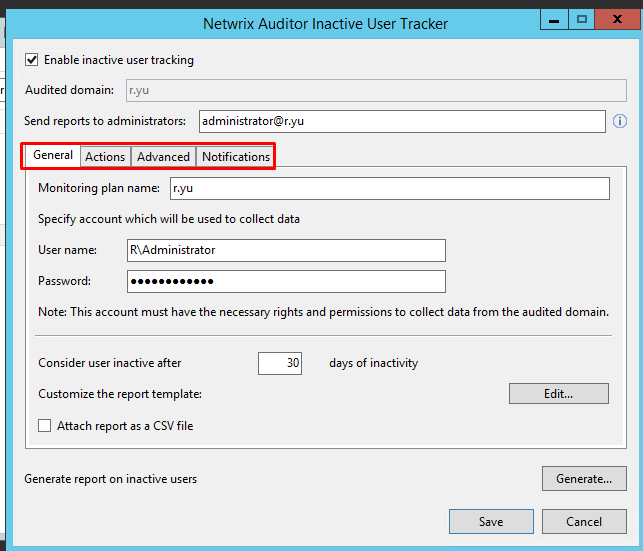
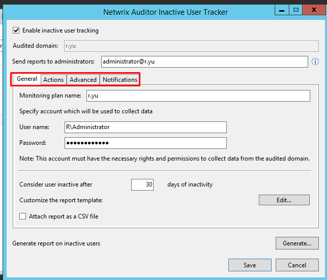

How do I migrate Netwrix Inactive Users Tracker to other servers?
On Netwrix Auditor Versions 9.0 and Newer, Inactive Users Tracker is installed alongside the Netwrix Auditor installation.
1. Install Netwrix Auditor on a new server.
2. Copy the following files to the same location on the new server:
4. Reconfigure Inactive Users Tracker using the screenshots you captured
5. Apply your Netwrix Auditor License to the new instance of Netwrix Auditor.
On Netwrix Auditor Versions 9.0 and Newer, Inactive Users Tracker is installed alongside the Netwrix Auditor installation.
1. Install Netwrix Auditor on a new server.
2. Copy the following files to the same location on the new server:
- Contents of C:\ProgramData\Netwrix Auditor\Inactive Users Tracker
- Screenshot all four tabs of the Inactive Users Tracker interface for configuration

3. Paste the contents of original
C:\ProgramData\Netwrix Auditor\Inactive Users Tracker folder to the
C:\ProgramData\Netwrix Auditor\Inactive Users Tracker
folder on the new server- Screenshot all four tabs of the Inactive Users Tracker interface for configuration

4. Reconfigure Inactive Users Tracker using the screenshots you captured
5. Apply your Netwrix Auditor License to the new instance of Netwrix Auditor.